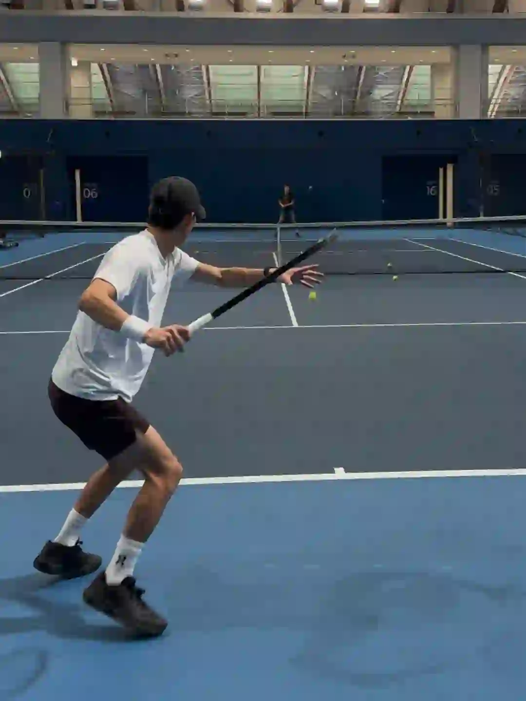

2026年3月23日
03月23日报告
生成时间：2026-03-23 · 范围：时尚 / 穿搭 / 网球
今日参考账号：Shanghai sights / 摄影电焊机 / FashionTrend.
今日高信号标题：上海秋冬男士街拍年度18图（秋冬篇） ｜ 盘点上海夏季街头简约随性高级感穿搭分享 ｜ “秀场积累”Emporio Armani 26秋冬时装秀
竞品策略变化：未命中监控竞品样本
今日高信号标题：上海秋冬男士街拍年度18图（秋冬篇） ｜ 盘点上海夏季街头简约随性高级感穿搭分享 ｜ “秀场积累”Emporio Armani 26秋冬时装秀
竞品策略变化：未命中监控竞品样本

时尚 · 01
上海秋冬男士街拍年度18图（秋冬篇）
⭐ 610
👍 2801
今天可学
- 内容结构：人物 + 18图，更像资料型合集
- 收藏效率高，说明用户把它当成可复用模板/知识卡，不只是刷到即过
- 评论活跃，适合加入观点冲突、对比案例或常见误区来拉讨论
- 标签聚焦：#城市氛围感穿搭 / #ootd每日穿搭 / #上海街拍 / #街拍穿搭
时尚 · 02
盘点上海夏季街头简约随性高级感穿搭分享
⭐ 402
👍 4224
今天可学
- 内容结构：人物 + 0图，更像单点表达
- 点赞高于收藏，偏流量型曝光内容，不值得原样照抄
- 评论活跃，适合加入观点冲突、对比案例或常见误区来拉讨论
- 正文入口：（正文为空或未取到）
时尚 · 03
“秀场积累”Emporio Armani 26秋冬时装秀
⭐ 528
👍 993
今天可学
- 内容结构：未判定 + 0图，更像单点表达
- 收藏效率高，说明用户把它当成可复用模板/知识卡，不只是刷到即过
- 正文入口：（正文为空或未取到）

时尚 · 04
要让别人觉得你很高级
⭐ 194
👍 232
今天可学
- 内容结构：文字卡 + 4图，更像单点表达
- 收藏效率高，说明用户把它当成可复用模板/知识卡，不只是刷到即过
- 正文入口：高级感从来都不是 标签、包装、光鲜 而是一种被生活雕刻过的内在节奏 是力量感的本身#提升你的个人气质自信 #你给别人的就是你最想要的#高级感
- 标签聚焦：#提升你的个人气质自信 / #你给别人的就是你最想要的 / #高级感

时尚 · 05
C2H4® 2025 Winter Drop Lookbook
⭐ 177
👍 244
今天可学
- 内容结构：文字卡 + 4图，更像单点表达
- 这条流量带有明显外部加成，只拆内容结构与包装，不原样复制流量来源
- 正文入口：潮流趋势/审美提升/灵感图片 潮流趋势灵感图片by:® 2025 Winter Drop Lookbook
- 标签聚焦：#廓系穿搭 / #每天一个穿搭灵感 / #潮流趋势 / #时尚穿搭
时尚赛道今日方法论
- 样本依据：上海秋冬男士街拍年度18图（秋冬篇） / “秀场积累”Emporio Armani 26秋冬时装秀
- 当天结构信号：人物封面 + 0图 最强；优先学习样本 3 条，低收藏流量样本 1 条。
- 时尚赛道今天跑出来的是“审美判断 + 资料感整理”：像 要让别人觉得你很高级 这类高收藏样本，核心不是讲步骤，而是把趋势、风格线索和案例并排给足，用户才愿意以 83.6% 的收藏率反复回看。
- 执行建议：标题先抛出趋势/风格判断，再给明确收益；正文少讲空泛氛围，多给风格标签、对照案例和可复看的视觉结论，让内容更像灵感资料卡。
- 反例提醒：盘点上海夏季街头简约随性高级感穿搭分享 点赞高但收藏低，说明这类曝光型内容能带流量，不适合直接当明日主打法。
- 风险提醒：C2H4® 2025 Winter Drop Lookbook 已标记为 [不可复制]，只拆结构，不作为明日选题原样跟进。
今日参考账号：林小花 / 豌豆罐头 / ASHLEYASS
今日高信号标题：2025年度穿搭合集✨做自己的美丽主理人 ｜ 电梯检阅｜高智感的一周穿搭不重样 ｜ 一周穿搭
竞品策略变化：未命中监控竞品样本
今日高信号标题：2025年度穿搭合集✨做自己的美丽主理人 ｜ 电梯检阅｜高智感的一周穿搭不重样 ｜ 一周穿搭
竞品策略变化：未命中监控竞品样本
穿搭 · 01
2025年度穿搭合集✨做自己的美丽主理人
⭐ 1590
👍 8220
今天可学
- 内容结构：文字卡 + 18图，更像资料型合集
- 收藏与点赞较平衡，可学选题包装，但仍需补强可执行细节
- 评论活跃，适合加入观点冲突、对比案例或常见误区来拉讨论
- 正文入口：恍恍惚惚一年的时间就这样匆匆忙忙连滚带爬地结束了 这一组春夏秋冬的年度穿搭合集 不知道大家又是从哪一张照片关注小花的呢？ 回想过去每一年的成长好像都要伴随着一些失去 但庆幸的是总是…
- 标签聚焦：#2025回顾我的主理人时刻 / #时髦主理人 / #ootd每日穿搭 / #超会穿企划
穿搭 · 02
电梯检阅｜高智感的一周穿搭不重样
⭐ 1021
👍 2659
今天可学
- 内容结构：人物 + 4图，更像单点表达
- 收藏效率高，说明用户把它当成可复用模板/知识卡，不只是刷到即过
- 标签聚焦：#我的上班通勤穿搭 / #穿搭合集 / #复古穿搭 / #上班族穿搭
穿搭 · 03
一周穿搭
⭐ 943
👍 3098
今天可学
- 内容结构：人物 + 0图，更像单点表达
- 收藏效率高，说明用户把它当成可复用模板/知识卡，不只是刷到即过
- 正文入口：（正文为空或未取到）

穿搭 · 04
👨🏻40+叔叔｜5套男生穿搭学会蓝色搭卡其色
⭐ 803
👍 1183
今天可学
- 内容结构：文字卡 + 9图，更像资料型合集
- 收藏效率高，说明用户把它当成可复用模板/知识卡，不只是刷到即过
- 正文入口：蓝色搭配卡其色穿搭教程，会穿真的很简单
- 标签聚焦：#穿搭合集 / #OOTW / #胶囊衣橱 / #男生休闲风穿搭
穿搭 · 05
新的一年，我的长期主义之选
⭐ 451
👍 2265
今天可学
- 内容结构：未判定 + 0图，更像单点表达
- 收藏与点赞较平衡，可学选题包装，但仍需补强可执行细节
- 评论活跃，适合加入观点冲突、对比案例或常见误区来拉讨论
- 正文入口：（正文为空或未取到）
穿搭赛道今日方法论
- 样本依据：电梯检阅｜高智感的一周穿搭不重样 / 一周穿搭
- 当天结构信号：文字卡封面 + 0图 最强；优先学习样本 3 条，低收藏流量样本 0 条。
- 穿搭赛道今天最有效的是“整套可抄作业方案”：高收藏样本 👨🏻40+叔叔｜5套男生穿搭学会蓝色搭卡其色 说明，只要场景清楚、look 数量够多、搭配结果一眼能看懂，就更容易拿到 67.9% 级别的收藏反馈。
- 执行建议：优先做通勤/职业/一周不重样/套装盘点这类清单式内容；封面先给完整上身结果，图组里再拆单品变化和搭配理由，不要只发单套氛围图。
今日参考账号：郑恺 / 网球gogogo / Enioy Tennis
今日高信号标题：网球标准：德约科维奇-正手慢动作分析！ ｜ 德约科维奇—教科书般的正手|干货满满 ｜ attack tennis 🎾
竞品策略变化：未命中监控竞品样本
今日高信号标题：网球标准：德约科维奇-正手慢动作分析！ ｜ 德约科维奇—教科书般的正手|干货满满 ｜ attack tennis 🎾
竞品策略变化：未命中监控竞品样本

网球 · 01
未命名笔记
⭐ 54610
👍 421155
今天可学
- 内容结构：视频封面 + 视频，更像视频示范/单点表达
- 这条流量带有明显外部加成，只拆内容结构与包装，不原样复制流量来源
- 正文入口：干货！如何在球场装高手 #我的星年仪式感 #我的新年马精神 #明星不止AB面 #网球尖子生 #小郑青年的网球日记
- 标签聚焦：#我的星年仪式感 / #我的新年马精神 / #明星不止AB面 / #网球尖子生

网球 · 02
网球标准：德约科维奇-正手慢动作分析！
⭐ 6408
👍 7360
今天可学
- 内容结构：视频封面 + 视频，更像视频示范/单点表达
- 这条流量带有明显外部加成，只拆内容结构与包装，不原样复制流量来源
- 正文入口：最适合业余选手学习的网球动作~#网球 #网球教学 #德约科维奇 #国庆节 #WTT中国大满贯 #网球中国赛季来了 #上海大师赛 #球类运动日常 #打球 #人生的意义
- 标签聚焦：#网球 / #网球教学 / #德约科维奇 / #国庆节
网球 · 03
德约科维奇—教科书般的正手|干货满满
⭐ 1948
👍 1594
今天可学
- 内容结构：未判定 + 0图，更像单点表达
- 这条流量带有明显外部加成，只拆内容结构与包装，不原样复制流量来源
- 正文入口：（正文为空或未取到）

网球 · 04
attack tennis 🎾
⭐ 941
👍 4332
今天可学
- 内容结构：视频封面 + 视频，更像视频示范/单点表达
- 收藏效率高，说明用户把它当成可复用模板/知识卡，不只是刷到即过
- 标签聚焦：#tennis / #rf / #テニス / #网球

网球 · 05
秋季多巴胺/简单好看的6套网球入秋穿搭
⭐ 945
👍 1443
今天可学
- 内容结构：视频封面 + 视频，更像视频示范/单点表达
- 收藏效率高，说明用户把它当成可复用模板/知识卡，不只是刷到即过
- 评论活跃，适合加入观点冲突、对比案例或常见误区来拉讨论
- 正文入口：-秋冬保持轻巧不臃肿 一件外套搭配 可穿可脱更有层次感！ 👕Kswiss 卢布列夫 🩳Kswiss 卢布列夫 👟Nike Court Zoom NEX 🎾Head Extreme …
- 标签聚焦：#网球穿搭ootd / #网球穿搭 / #ootd每日穿搭 / #男士穿搭
网球赛道今日方法论
- 样本依据：attack tennis 🎾 / 秋季多巴胺/简单好看的6套网球入秋穿搭
- 当天结构信号：视频封面封面 + 视频 最强；优先学习样本 2 条，低收藏流量样本 0 条。
- 网球赛道今天胜出的不是热闹球场感，而是“动作纠错/装备收益/新手可执行”：高收藏样本 秋季多巴胺/简单好看的6套网球入秋穿搭 证明，只要用户能马上拿去练，收藏率就能来到 65.5%。
- 执行建议：标题写清动作部位、错误修正或装备收益；内容里给慢动作、步骤和上场场景。明星/赛事样本只借包装，不把热点本身当方法论。
- 风险提醒：未命名 已标记为 [不可复制]，只拆结构，不作为明日选题原样跟进。
- 自动抽取规则：仅收录收藏率 >20% 且未被标记为 [不可复制] 的标题模板
- 写入目标：/Users/zhangxiaosong/shared/context/xhs-knowledge/topics/title-templates.md
- 把今天高收藏、高可复制的打法优先塞进明日发帖计划
- 竞品若连续两天从展示型转向教程/资料型，单独开策略变更记录
- 对被标注 [不可复制] 的样本，只拆结构，不抄流量来源